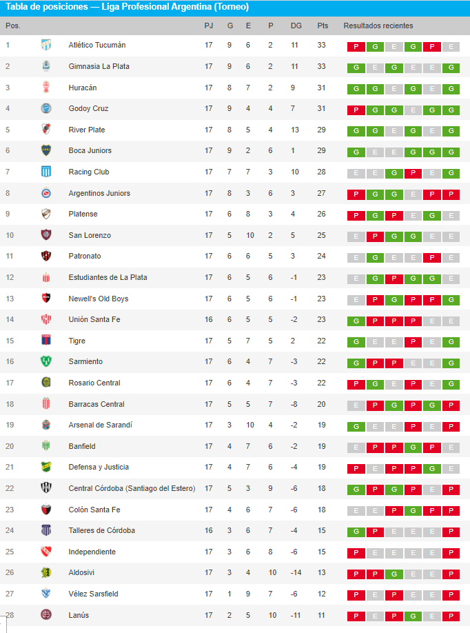

River y Boca ganaron y llegan de gran forma al Superclásico: así están las posiciones de la Liga Profesional y el ingreso a las copas
El Millonario no pierde pisada en el campeonato y llega de la mejor manera al Superclásico frente a Boca, que también sumó de a tres al vencer a Colón.
6 de Septiembre de 2022
La Liga Profesional de Fútbol va entrando en su etapa de definiciones. Gimnasia de La Plata terminó el domingo como líder a la espera de que este lunes Atlético Tucumán reciba a Banfield en el estadio Monumental José Fierro. El Decano no sólo tiene la obligación de ganar para recuperar la primera posición de la tabla, sino que también por las victorias de Huracán frente a Central Córdoba, de Boca sobre Colón de Santa Fe, de River contra Barracas Central y de Racing ante Argentinos Juniors.
Los dirigidos por Néstor Gorosito escalaron a lo más alto después de derrotar a Independiente con 33 puntos. Con 32 aparece el cuadro tucumano con una fecha menos, el Globo con 31, el Xeneize junto al Millonario con 29 y la Academia con Godoy Cruz en 28 aunque el Bodeguero todavía debe enfrentar a Arsenal de Sarandí en Mendoza.
Resultado de la gente por encuentas en redes sociales
| Equipo | Resultado |
|---|---|
| River | 2 |
| Boca | 2 |
POSICIONES DE LA LIGA PROFESIONAL
Vale recordar que el plato fuerte de la jornada número 18 que tiene fecha de inicio el próximo jueves es el Superclásico entre Boca y River en la Bombonera que podría decidir quién de los dos equipos competirá por una estrella local hasta el final. Mientras tanto, en lo que respecta a la Tabla Anual que clasifica a las competencias internacionales del 2023, están River Plate (58), Racing Club (58) y Gimnasia y Esgrima La Plata (57). En zona de Copa Sudamericana 2023, se ubican: Argentinos (52), Estudiantes de La Plata (51), Huracán (49), Newell’s (46), Godoy Cruz (44) y Defensa y Justicia (43) con Atlético Tucumán (43) y Sarmiento (43). El Xeneize ya tiene su cupo para el máximo torneo continental por ser campeón de la Copa de la Liga 2022 y arrastra hacia abajo un puesto los boletos a dichos certámenes.
FECHA 17
Lunes 5
- 19.00 Defensa y Justicia VS San Lorenzo
- 19.00 Godoy Cruz VS Arsenal
- 21.30 Atletico Túcuman VS Banfield
FECHA 18
Jueves 8
- 19.00 Independiente VS Aldosivi
- 20.30 Union VS Sarmiento
- 20.30 Argentinos VS Rosario Central
Viernes 9
- 15.00 Barracas Central VS Lánus
- 18.00 Patronato VS Platense
- 20.30 Tigres VS Huracán
- 20.30 Estudiantes vs Racing Club
Sábado 10
- 15.00 Central Cordoba VS Godoy Cruz
- 18.00 San Lorenzo VS Atletico Túcuman
- 20.30 Banfield VS Colón
Domingo 11
- 13.00 Newell's VS Gimnasia
- 13.00 Arsenal VS Vélez
- 17.00 River VS Boca
- 20.00 Talleres vs Defensa y Justicia